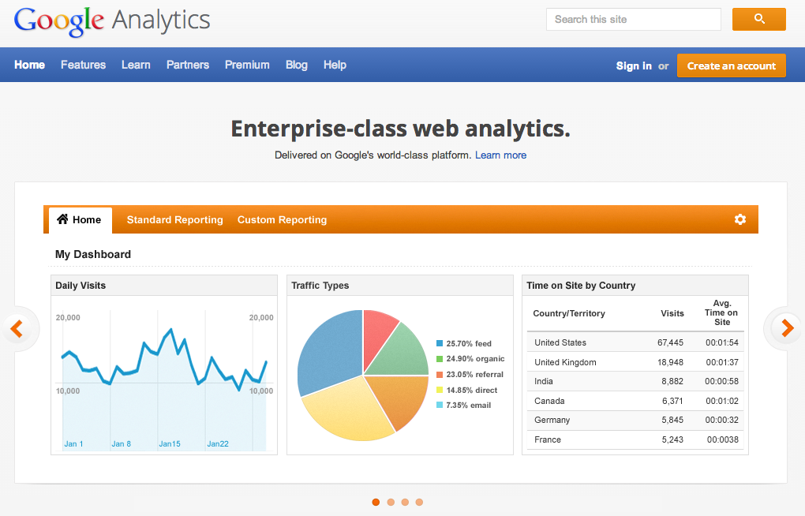
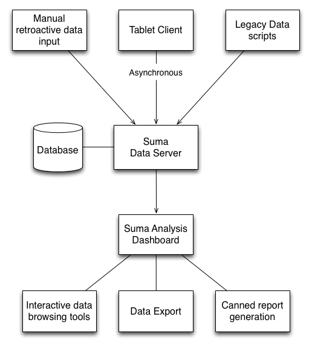
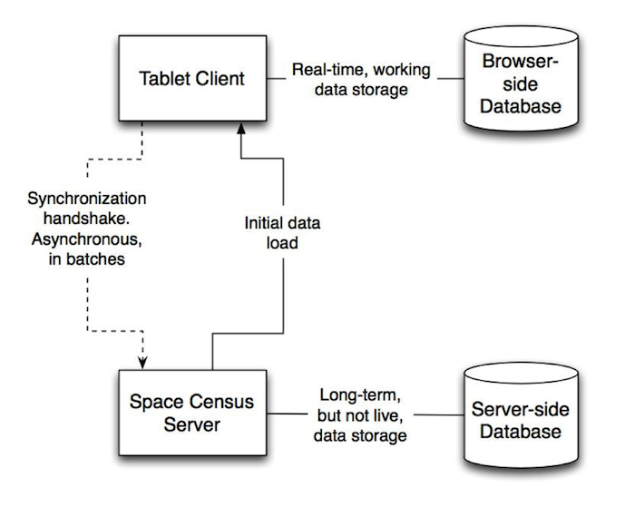

The Suma Project
Integrating observational data assessment into space and service design
Jason Casden | Bret Davidson
NCSU Libraries
The problem
- Many libraries perform manual counts of people in spaces doing something at some time
- The process involves tedious collection mechanisms, lots of paperwork, and much room for error
- There is no coordinated effort to help departments analyze their data

by Joyce Chapman, Suma Community development and data analysis specialist.


Spreadsheets
- Dissimilar formats
- Fragmentation across time and topic
- Time-consuming analysis
We are data conformists.
Our solution
An open source tablet-based app (well, toolkit) to aid library staff in assessment of how patrons are using library spaces.
In other words…the gathering, storing, exporting, analyzing, and visualizing of data across spaces/activities/time and around events.
Suma principles
- Support frequent data collection for a wide range of initiatives
- Provide useful and usable tools for a wide range of staff
- Support the integration of data querying and exploration into regular decision-making processes
Data collection

Suma data collection

Space Analytics
- Routine application of data to decision-making processes
- Staffing
- Hours
- Service point locations
- Outreach
- Ability to compare behavior before and after various changes
- Ability to explore usage data to better understand users
The web has had this for years
Staff as sensors
Understanding our users
- Where do our users go?
- What are they doing?
- When are they doing it?
- What could they be doing?
Technical Principles
- Data Integrity
- Performant Interfaces
- Reusable Tools
System Overview
System Overview
System Overview
System Overview

Data Synchronization
Core Technologies
- Zend PHP Framework
- MySQL, Web SQL Database, Persistence.js
- Bootstrap & Handlebars
- jQuery, Lodash, Moment.js
- D3.js
What does this enable?
Multi-dimensional Views of Data
Interactive Data Exploration
Data Export
- CSV File
- Chart Images
Structured Questions
- How does evening usage compare across initiatives?
- Do the types of questions vary based on time of day?
- Transaction length across points in semester?
- Evidence of roaming reference?
Demo
Do the types of questions vary based on time of day?
12pm to 5pm
5pm to 10pm
Future Work
- Comparative Analysis
- Proportional Analysis
- More Granularity (hourly)
- Improved Admin Interface
Example uses
- Hunt library opening metrics
- Special Collections outreach events
- Evaluation of roaming reference service
- Main sevice (reference) desk transaction analysis
Open Source
- 7+ active academic library pilot projects
- Hosted on GitHub
- Pull requests are always welcome
Open Source support (free kittens)

Project team
- Jason Casden
- Bret Davidson
- Joyce Chapman
- Rob Rucker
- Rusty Earl
- Eric McEachern
Thank You!
Jason Casden: jason_casden@ncsu.edu
Bret Davidson: bret_davidson@ncsu.edu